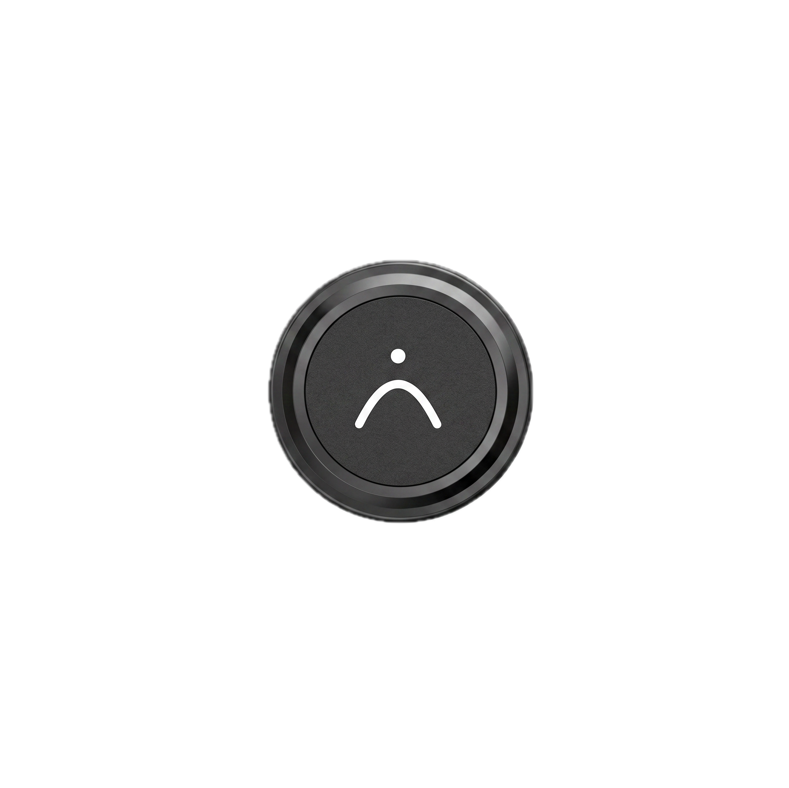
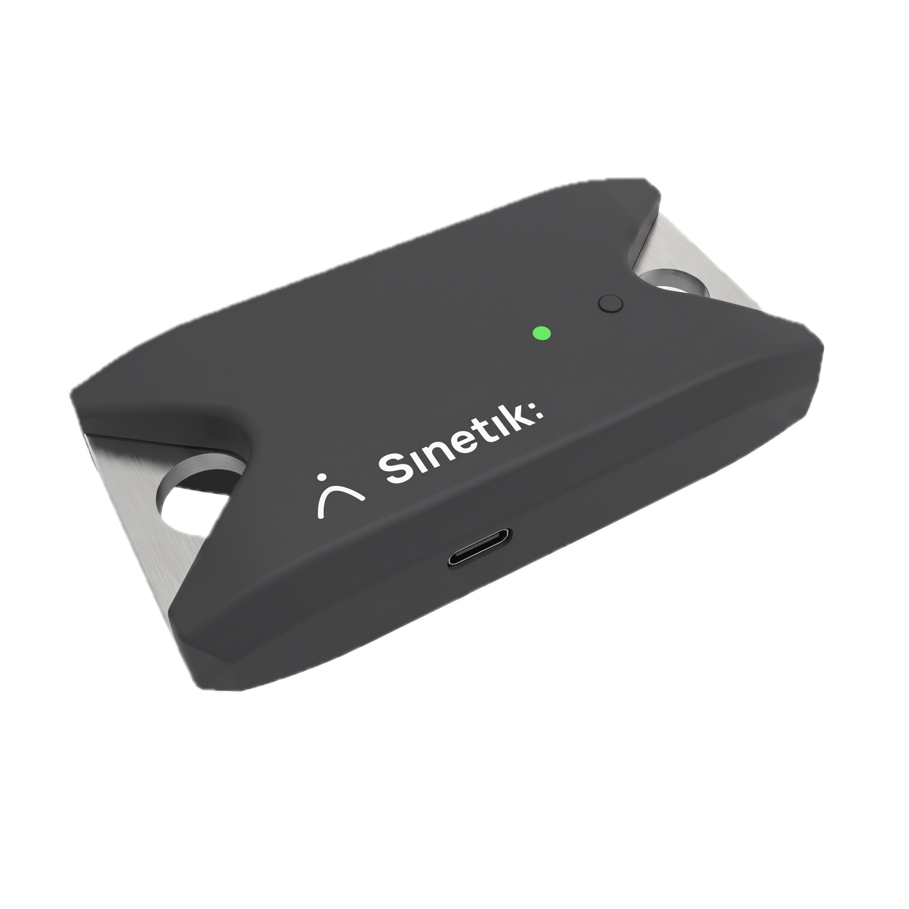

Un sensore al polso, l'app sull'iPhone. Tracker misura la velocità di ogni ripetizione, la colloca nella zona di lavoro prevista e segnala il momento in cui una serie smette di dare ciò che le chiedevi. In palestra, senza interrompere l'allenamento.
A ogni ripetizione: velocità media, velocità di picco, ampiezza e il rapporto tra le due velocità. A ogni serie: la perdita di velocità e lo scarto rispetto alla zona prevista. Il carico si inserisce una volta, prima della serie — tutto il resto viene calcolato durante lo sforzo.
La perdita di velocità è il segnale centrale. È lei a dire, senza opinioni né sensazioni, quando una serie ha prodotto ciò che doveva — e quando inizia a costare più di quanto renda.
Illustrazione — i valori mostrati sono fittizi.
Come si ottiene, senza giri di parole: il sensore misura l'accelerazione e la velocità angolare a 52 Hz. Velocità e ampiezza ne derivano per integrazione del segnale. Forza e potenza sono calcolate a partire dal carico che inserisci. Tracker non misura la forza direttamente, e non pretende di farlo.
Lo stesso sensore, più usi. Usi ciò che serve al tuo piano — il resto non ti intralcia.
Inserisci il carico e la zona prevista, poi avvii. L'app segue la serie e ti restituisce il controllo alla fine.
La relazione tra carico e velocità, costruita su alcuni livelli. Indica dove si colloca l'atleta tra forza e velocità.
La forza massimale si deduce dalla relazione carico-velocità. Bastano due livelli, e la stima si affina a ogni livello aggiunto.
Un carico di riferimento, una ripetizione. Lo scarto di velocità rispetto al profilo dà lo stato del giorno.
Il complemento esplosivo del lavoro con carico, con lo storico che l'accompagna.
Ogni sessione si archivia da sola. Rileggi una progressione, non una pila di file.
Sta in una mano e si gestisce con uno sguardo. Durante la serie mostra velocità, zona e perdita. Alla fine propone un carico. Tra due serie non c'è nulla da fare.
iPhone, iPad e Mac. L'app è attualmente distribuita via TestFlight alle strutture pilota. La pubblicazione sull'App Store seguirà la fine di questa fase.
Richiedere un accesso TestFlightUn'unità inerziale Movesense personalizzata, indossata al polso con una fascia. Nessun cavo, nessun treppiede, niente da fissare sul bilanciere.


I prezzi non sono ancora stabiliti. Stiamo finalizzando il costo del materiale e la scelta tra vendita e abbonamento prima di annunciare cifre che manterremo. Le strutture pilota beneficiano delle condizioni d'ingresso, qualunque sia la griglia scelta in seguito.
Preparatore fisico, atleta
Accademia, club di formazione
Centro professionale, federazione
I dati della sessione sono salvati sul dispositivo e ti appartengono. Sono esportabili in qualsiasi momento in PDF, CSV o JSON — compreso il segnale grezzo del sensore, se vuoi condurre le tue analisi.
Ciò che ci chiedono e ciò che rispondiamo — anche quando la risposta non è a nostro favore.
Sì, e va detto. La traiettoria del polso non è esattamente quella del bilanciere, in particolare nei movimenti in cui le braccia si spostano rispetto al tronco. Abbiamo scelto il polso perché rende la preparazione immediata e il sensore utilizzabile in ogni esercizio, anche senza bilanciere. La coerenza da una sessione all'altra per lo stesso atleta e lo stesso esercizio è buona — ed è ciò che conta per guidare un allenamento. Il confronto cifra per cifra con un sistema fissato al bilanciere non è ancora stato oggetto di un confronto formale da parte nostra. È un lavoro che vogliamo svolgere, e pubblicheremo i risultati così come emergeranno.
Non ancora. Finché non avremo condotto questo confronto, considera i valori di Tracker come una scala interna: si confrontano tra loro, nel tempo, per lo stesso atleta e lo stesso esercizio. Non metterli accanto a quelli di un altro sistema nella stessa tabella.
Una decina di secondi: agganciare il sensore alla fascia, aprire l'app, scegliere l'esercizio e il carico. Niente da calibrare, niente da posizionare con precisione.
iPhone, iPad e Mac. Oggi è distribuita via TestFlight alle strutture pilota; la pubblicazione sull'App Store avverrà alla fine di questa fase. È prevista una versione Android, senza una data definita ad oggi.
No. Il collegamento con il sensore avviene via Bluetooth e la sessione è salvata sul dispositivo. La connessione serve solo a condividere un report o, in futuro, a sincronizzare con Sinetik:studio.
Le sessioni sono salvate localmente sul dispositivo dello staff ed esportabili in qualsiasi momento. La sincronizzazione con Sinetik:studio, in fase di sviluppo, si baserà su un hosting europeo con una rigorosa separazione tra organizzazioni: i dati restano quelli del club, non i nostri, e seguono il giocatore se cambia struttura. Non raccogliamo né immagini né posizione, e le grandezze registrate sono misure di allenamento — non dati sanitari.
No, ed è uno dei vantaggi del metodo. Tracker stima la forza massimale a partire dalla relazione tra carico e velocità, su alcuni livelli submassimali. Nella formazione, questo evita di far eseguire tentativi massimali a giovani atleti solo per conoscere il loro livello di forza.
No. Tracker misura e segnala; non decide. Ti dice che una serie ha perso il venti per cento di velocità — non se fosse il giorno giusto per fermarsi lì, per quell'atleta. Questa decisione resta tua, e lo strumento serve a rendertela più facile da prendere, non a sollevartene.
Capita — uno stacco dal rack, un riposizionamento. L'app filtra i movimenti troppo brevi o troppo lenti, e ogni ripetizione dubbia si elimina con un gesto durante o dopo la serie. Le medie e la perdita di velocità vengono ricalcolate immediatamente.
È previsto ed è la ragion d'essere dell'insieme: carico di muscolazione, wellness, test e pianificazione in un unico storico per giocatore. La connessione è in sviluppo. L'interfaccia sarà aperta anche ad altre piattaforme di analisi — non sarai vincolato a noi.
Tre cantieri in corso. Non sono disponibili oggi e non hanno una data: preferiamo annunciarli quando funzionano.
Le sessioni confluiscono nella piattaforma e si archiviano accanto al piano, al wellness e ai test. Un unico storico per giocatore, e un'interfaccia aperta agli strumenti che usi già.
Un secondo sensore, dedicato alla valutazione e all'allenamento in isometria. Completa la misura dinamica dove essa si ferma.
La fotocamera dell'iPhone per osservare il movimento stesso, sul campo come in palestra, là dove un sensore inerziale non basta più.
Tracker funziona e si usa già in palestra. Non per questo è finito. Apriamo un numero limitato di posti a club e accademie pronti a usarlo ogni giorno, a dirci cosa non va e a influenzare ciò che il prodotto diventerà. Condizioni d'ingresso garantite, e una linea diretta con chi lo costruisce.